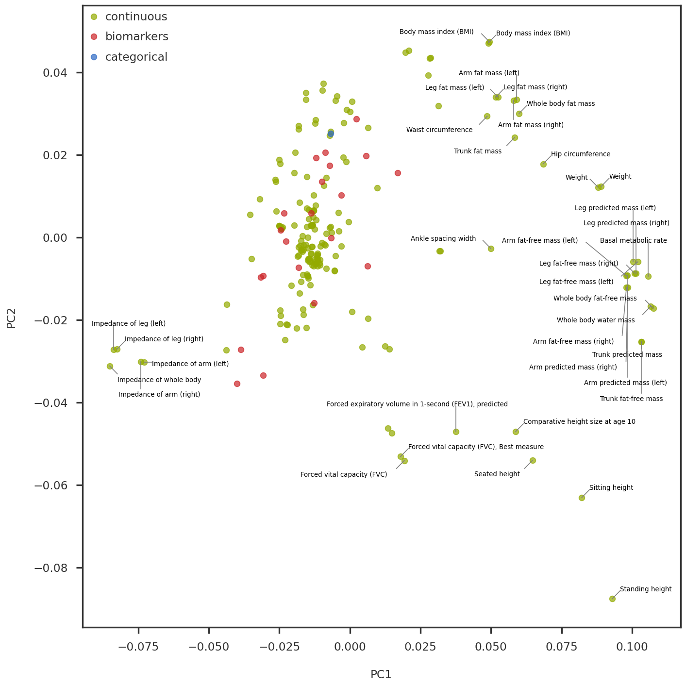
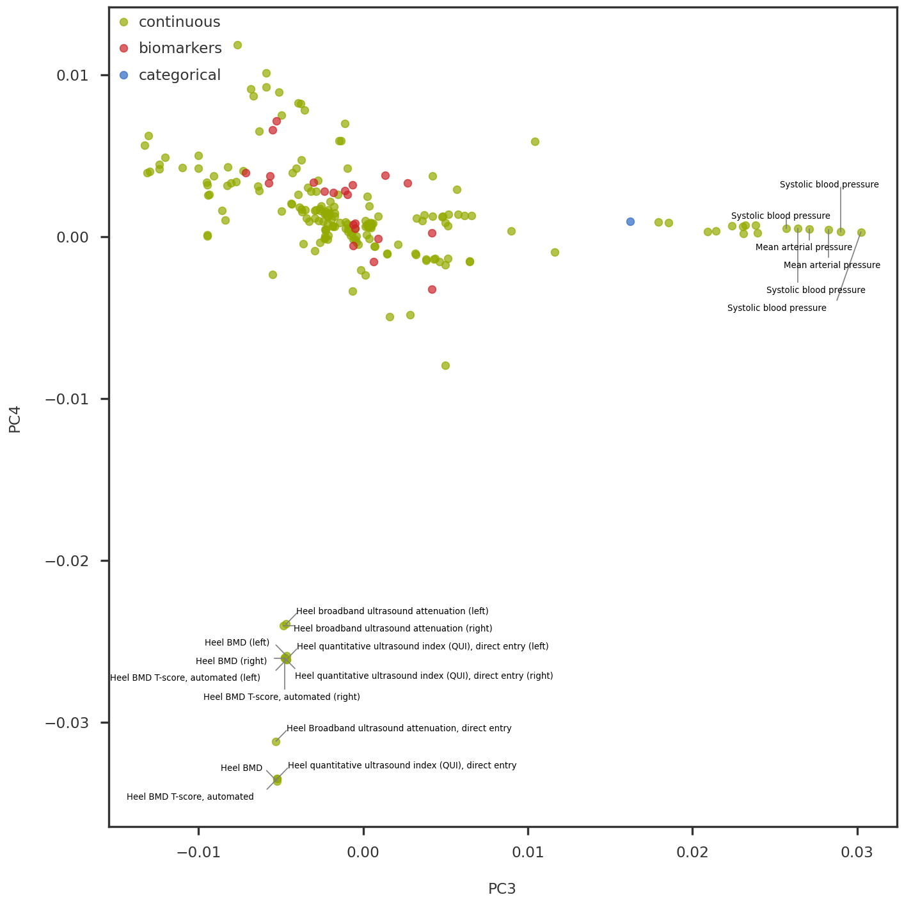
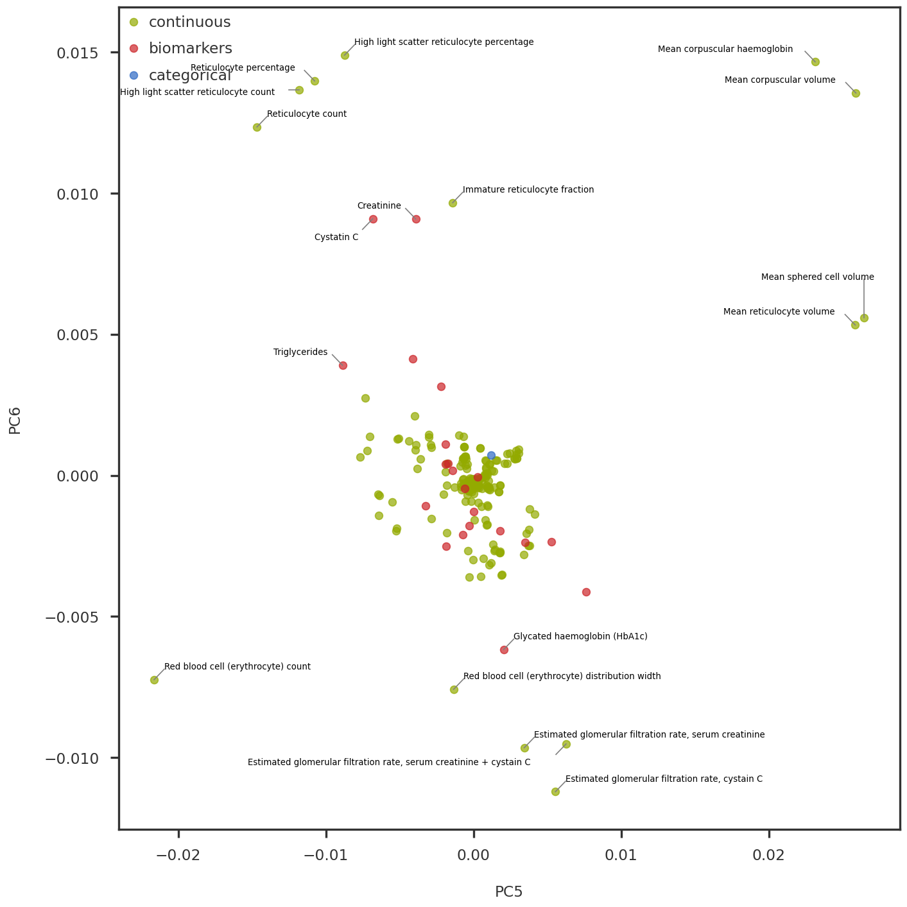

trait_types = trait_df['trait_type'].unique().tolist()trait_colors = {trait: color for trait, color inzip(trait_types, mpl_stylesheet.banskt_colors()[:len(trait_types)])}trait_types.reverse()
Code
fig = plt.figure(figsize = (12, 12))ax1 = fig.add_subplot(111)method ='nnm_sparse'ipc1 =0ipc2 =1trait_indices = np.array(trait_df.index)for t in trait_types: selectidx = np.array(trait_df[trait_df['trait_type'] == t].index) tidx = np.searchsorted(trait_indices, selectidx) xvals = pcomps[method][tidx, ipc1] yvals = pcomps[method][tidx, ipc2] ax1.scatter(xvals, yvals, alpha =0.7, color = trait_colors[t], label = t, s =50) ax1.legend(loc ='upper left')# Combine outliers in x-axis and y-axisxvals = pcomps[method][:, ipc1]yvals = pcomps[method][:, ipc2]outlier_idx_x = np.where(iqr_outlier(xvals, axis =0, bar =2.0))[0]outlier_idx_y = np.where(iqr_outlier(yvals, axis =0, bar =2.0))[0]outlier_idx = np.union1d(outlier_idx_x, outlier_idx_y)x_center = np.mean(ax1.get_xlim())# # Mark using adjustText package# # https://github.com/Phlya/adjustText# annots = []# for i in outlier_idx:# txt = trait_df.loc[trait_indices[i]]['description'].strip()# if 'intima-medial thickness' in txt:# continue# if xvals[i] > x_center:# annots += [ax1.annotate(txt, (xvals[i], yvals[i]), fontsize = 6, ha = 'right')]# else:# annots += [ax1.annotate(txt, (xvals[i], yvals[i]), fontsize = 6)]# # Adjust the annotations iteratively# adjust_text(annots, arrowprops=dict(arrowstyle='-', color = 'grey'))# Mark using textalloc packagetxt_list = []text_idx_list = []for i in outlier_idx: txt = trait_df.loc[trait_indices[i]]['description'].strip()#if 'intima-medial thickness' in txt:# continue txt_list.append(txt) text_idx_list.append(i)iflen(text_idx_list) >0: txt_idx = np.array(text_idx_list) textalloc.allocate_text(fig, ax1, xvals[txt_idx], yvals[txt_idx], txt_list, x_scatter = xvals, y_scatter = yvals, textsize =8, textcolor ='black', linecolor ='grey')ax1.set_xlabel(f"PC{ipc1 +1}")ax1.set_ylabel(f"PC{ipc2 +1}")plt.tight_layout()plt.show()

Code
fig = plt.figure(figsize = (12, 12))ax1 = fig.add_subplot(111)method ='nnm_sparse'ipc1 =2ipc2 =3trait_indices = np.array(trait_df.index)for t in trait_types: selectidx = np.array(trait_df[trait_df['trait_type'] == t].index) tidx = np.searchsorted(trait_indices, selectidx) xvals = pcomps[method][tidx, ipc1] yvals = pcomps[method][tidx, ipc2] ax1.scatter(xvals, yvals, alpha =0.7, color = trait_colors[t], label = t, s =50) ax1.legend(loc ='upper left')# Combine outliers in x-axis and y-axisxvals = pcomps[method][:, ipc1]yvals = pcomps[method][:, ipc2]outlier_idx_x = np.where(iqr_outlier(xvals, axis =0, bar =4.0))[0]outlier_idx_y = np.where(iqr_outlier(yvals, axis =0, bar =4.0))[0]outlier_idx = np.union1d(outlier_idx_x, outlier_idx_y)x_center = np.mean(ax1.get_xlim())# Mark using adjustText package# https://github.com/Phlya/adjustText# annots = []# for i in outlier_idx:# txt = trait_df.loc[trait_indices[i]]['description']# if 'intima-medial thickness' in txt:# continue# if xvals[i] > x_center:# annots += [ax1.annotate(txt, (xvals[i], yvals[i]), fontsize = 10, ha = 'right')]# else:# annots += [ax1.annotate(txt, (xvals[i], yvals[i]), fontsize = 10)]# # Adjust the annotations iteratively# adjust_text(annots, arrowprops=dict(arrowstyle='-', color = 'grey'))# Mark using textalloc packagetxt_list = []text_idx_list = []for i in outlier_idx: txt = trait_df.loc[trait_indices[i]]['description'].strip()if'pressure'in txt: txt = re.sub( pattern=r'(.*pressure),.*', repl='\\1', string = txt)# continueif'bone mineral density'in txt: txt = re.sub( pattern =r'bone mineral density \(BMD\)', repl ='BMD', string = txt) txt_list.append(txt) text_idx_list.append(i)iflen(text_idx_list) >0: txt_idx = np.array(text_idx_list) textalloc.allocate_text(fig, ax1, xvals[txt_idx], yvals[txt_idx], txt_list, x_scatter = xvals, y_scatter = yvals, textsize =8, textcolor ='black', linecolor ='grey')ax1.set_xlabel(f"PC{ipc1 +1}")ax1.set_ylabel(f"PC{ipc2 +1}")plt.tight_layout()plt.show()

Code
fig = plt.figure(figsize = (12, 12))ax1 = fig.add_subplot(111)method ='nnm_sparse'ipc1 =4ipc2 =5trait_indices = np.array(trait_df.index)for t in trait_types: selectidx = np.array(trait_df[trait_df['trait_type'] == t].index) tidx = np.searchsorted(trait_indices, selectidx) xvals = pcomps[method][tidx, ipc1] yvals = pcomps[method][tidx, ipc2] ax1.scatter(xvals, yvals, alpha =0.7, color = trait_colors[t], label = t, s =50) ax1.legend(loc ='upper left')# Combine outliers in x-axis and y-axisxvals = pcomps[method][:, ipc1]yvals = pcomps[method][:, ipc2]outlier_idx_x = np.where(iqr_outlier(xvals, axis =0, bar =4.0))[0]outlier_idx_y = np.where(iqr_outlier(yvals, axis =0, bar =4.0))[0]outlier_idx = np.union1d(outlier_idx_x, outlier_idx_y)x_center = np.mean(ax1.get_xlim())# Mark using adjustText package# https://github.com/Phlya/adjustText# annots = []# for i in outlier_idx:# txt = trait_df.loc[trait_indices[i]]['description']# if 'intima-medial thickness' in txt:# continue# if xvals[i] > x_center:# annots += [ax1.annotate(txt, (xvals[i], yvals[i]), fontsize = 10, ha = 'right')]# else:# annots += [ax1.annotate(txt, (xvals[i], yvals[i]), fontsize = 10)]# # Adjust the annotations iteratively# adjust_text(annots, arrowprops=dict(arrowstyle='-', color = 'grey'))# Mark using textalloc packagetxt_list = []text_idx_list = []for i in outlier_idx: txt = trait_df.loc[trait_indices[i]]['description'].strip()#if 'intima-medial thickness' in txt:# continue txt_list.append(txt) text_idx_list.append(i)iflen(text_idx_list) >0: txt_idx = np.array(text_idx_list) textalloc.allocate_text(fig, ax1, xvals[txt_idx], yvals[txt_idx], txt_list, x_scatter = xvals, y_scatter = yvals, textsize=8, textcolor ='black', linecolor ='grey')ax1.set_xlabel(f"PC{ipc1 +1}")ax1.set_ylabel(f"PC{ipc2 +1}")plt.tight_layout()plt.show()

Code
fig = plt.figure(figsize = (12, 12))ax1 = fig.add_subplot(111)method ='nnm_sparse'ipc1 =8ipc2 =9trait_indices = np.array(trait_df.index)for t in trait_types: selectidx = np.array(trait_df[trait_df['trait_type'] == t].index) tidx = np.searchsorted(trait_indices, selectidx) xvals = pcomps[method][tidx, ipc1] yvals = pcomps[method][tidx, ipc2] ax1.scatter(xvals, yvals, alpha =0.7, color = trait_colors[t], label = t, s =50) ax1.legend(loc ='upper left')# Combine outliers in x-axis and y-axisxvals = pcomps[method][:, ipc1]yvals = pcomps[method][:, ipc2]outlier_idx_x = np.where(iqr_outlier(xvals, axis =0, bar =3.0))[0]outlier_idx_y = np.where(iqr_outlier(yvals, axis =0, bar =3.0))[0]outlier_idx = np.union1d(outlier_idx_x, outlier_idx_y)x_center = np.mean(ax1.get_xlim())# Mark using adjustText package# https://github.com/Phlya/adjustText# annots = []# for i in outlier_idx:# txt = trait_df.loc[trait_indices[i]]['description']# if 'intima-medial thickness' in txt:# continue# if xvals[i] > x_center:# annots += [ax1.annotate(txt, (xvals[i], yvals[i]), fontsize = 10, ha = 'right')]# else:# annots += [ax1.annotate(txt, (xvals[i], yvals[i]), fontsize = 10)]# # Adjust the annotations iteratively# adjust_text(annots, arrowprops=dict(arrowstyle='-', color = 'grey'))# Mark using textalloc packagetxt_list = []text_idx_list = []for i in outlier_idx: txt = trait_df.loc[trait_indices[i]]['description'].strip()#if 'intima-medial thickness' in txt:# continue txt_list.append(txt) text_idx_list.append(i)iflen(text_idx_list) >0: txt_idx = np.array(text_idx_list) textalloc.allocate_text(fig, ax1, xvals[txt_idx], yvals[txt_idx], txt_list, x_scatter = xvals, y_scatter = yvals, textsize=8, textcolor ='black', linecolor ='grey')ax1.set_xlabel(f"PC{ipc1 +1}")ax1.set_ylabel(f"PC{ipc2 +1}")plt.tight_layout()plt.show()